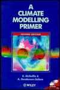
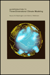

Climate Modeling
I am very interested in the science of climate change and climate models, particularly global circulation models. There are two books that have been very helpful to me in this area:
|  |
A Climate Modelling Primer
by Ann Henderson-Sellers and Kendal McGuffie
The Primer describes the science and mathematics of all types of models, from energy balance and single column models to fully coupled global models. I was a reviewer for the third edition, and contributed to the section on emerging numerical methods in climate global models.
|
 |
An Introduction to Three-Dimensional Climate Modeling
by Warren M. Washington and Claire L. Parkinson
This text provides more details on finite difference and global spectral methods, as well as parameterization schemes. Warren Washinton, who I worked for as a graduate student, is the director of the Climate Change Section at NCAR. Claire Parkinson is a climatologist at NASA Goddard.
|
Mathematics and Music
The intersection of mathematics and music is of great interest to me. Descriptions of pitch and tone using vibrating strings have mathematical parallels in the Fourier Series used to solve partial differential equations.
My presentation, Mathematical Harmonies, covers these topics at the highschool and college level. I published a paper in the College Mathematics Journal titled "Musical Analysis and Synthesis with Matlab" which includes
web resources.
Underrepresented Minorities and Women in Science and Engineering
I collaborate with Tom Windham (NSF) and Barbara Kraus (CU)
to gather data on U.S. Bachelors and PhD degrees conferred to
underrepresented minorities and women in natural sciences and engineering.
Our statistics include representation per population, projections, and
sub-discipline data. Our two-part article,
Striving Towards Equity; Underrepresented Minorities and Mathematics, appeared in the March and April 2005 issues of SIAM News.
Higher and Deeper
Piled Higher and Deeper is a comic strip about life as a graduate student.
Here are some of my favorites:
|
|